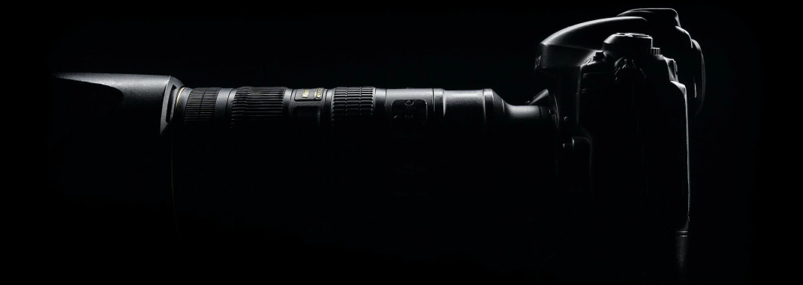

Capture
 Read blog
Welcome to Libertas's
Photography Corner
Hello and welcome to Libertas's Photography Corner, a space where the artistry of photography comes to life! I'm Ivan, a passionate photographer with a love for capturing moments that tell unique stories. This blog is more than just a collection of images; it's a journey through the lens, exploring the beauty, emotions, and technical aspects that make each photograph a work of art.